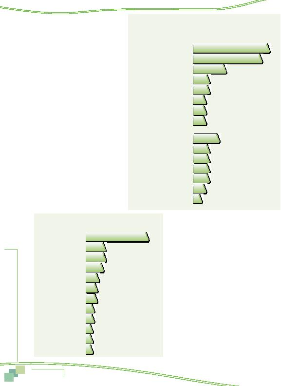

MWCOG-Comm
uter Conn
ecti
on
s-- 2010 State o
f th
e Comm
ute Report
2 0
Suggestions to Improve
Transportation
The survey interview gave
respondents an opportunity to provide sugges-
tions for how they thought the transportation
system could be improved. The question was
open-ended, so respondents were free to make
any recommendation and to offer multiple ideas.
About two in ten respondents said they did
not think any improvements were needed and
another 10% said they didn't have any sugges-
tions. Figure 7 presents the ideas proposed by
the remaining respondents.
A large share of the recommendations
focused on ways to improve transit service in
the region, with particular emphasis on increas-
ing transit availability and safety. Two in ten
respondents proposed Metrorail expansions to
more destinations and 17% wanted more bus
and train service. Eight percent suggested that
Metrorail safety be enhanced.
Some respondents noted other types of
improvements, such as better regional manage-
ment/planning of transportation facilities, more
funding, and reducing traffic congestion. About
four percent volunteered that the region should
build more roads or repair existing roads.
BENEFITS OF RIDESHARING
Questions were added to the 2010 SOC survey to
assess commuters' opinions about the benefits generated
by use of alternative modes and the importance of future
investment in alternative transportation. Respondents
were asked about the following:
n
What personal benefits do people who use
alternative modes receive from using these types of
transportation?
n
What impacts or benefits does a community or region
receive when people use alternative modes?
Personal Benefits of Alternative Mode Use
When asked what personal benefits users of alterna-
tive modes receive from using those modes, 90% named
at least one benefit and 53% reported two or more
personal benefits. Figure 8 details the responses to this
question.
Saving money or gas topped the list of personal
benefits, cited by 55% of respondents. No other benefit
came close in the percentage of responses. Eleven percent
noted a related cost-saving benefit of reducing wear
and tear on one's personal vehicle. Almost two in ten
Figure 7
Recommendations to Improve Regional Transportation
19%
17%
8%
4%
4%
3%
3%
3%
4%
4%
4%
4%
6%
3%
2%
Transit Recommendations
Expand Metrorail to more locations
More bus/train service
Improve Metrorail safety
Upgrade/maintain equipment
Reduce transit fares
Improve bus safety
Improve employee training
Improve on-time performance
Other Recommendations
Better management/planning
More funding
Reduce traffic/congestion
More roads
Roads need repair
Wilden lanes, overpasses, bridges
More bicycle lanes/paths
Figure 8
Personal Benefits of Alternative Mode/Use
55%
17%
17%
15%
11%
10%
6%
5%
5%
4%
4%
4%
Save money/save gas
Avoid stress
Use time productively
Help environment
Reduce wear & tear on car
Have companionship
No need for a car
Arrive on time
Use HOV lane
Reduce greenhouse gas
Less traffic, avoid traffic
Save gas, energy
Survey Results